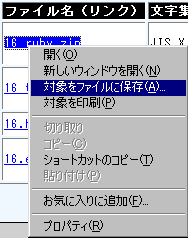
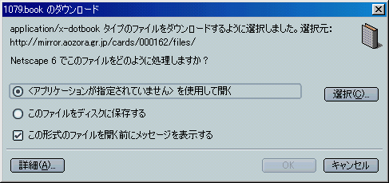
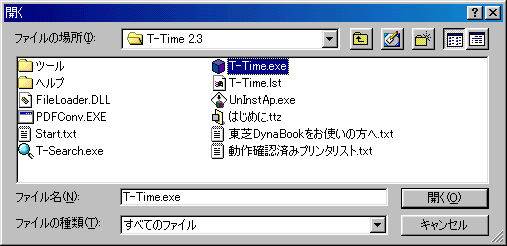
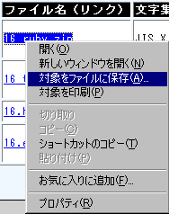

(*1)PDFファイルのプラグインを登録する方法は、アドビ システムズのサイトを参照してください。
(*2)ドットブックを開くためのアプリケーションを指定する場合は、T-Timeを指定してください。
例) Netscape 6.2の場合
ファイルの処理方法を尋ねる画面で、「＜アプリケーションが指定されていません＞を使用して開く」を選び、「選択」ボタンを押して、アプリケーションを選択します。

アプリケーションを選択する画面で、T-Time.exeを選択します。 通常は、「Program Files」→「T-Time2.3（T-Timeのバージョンによって異なります）」→「T-Time.exe」にあります。

(*3)ヘルパーアプリケーションを登録する方法は、ボイジャー社のサイトを参照してください。
|
例1) Internet Explorer 5.0の場合  |
例2) Netscape 6.2の場合
|